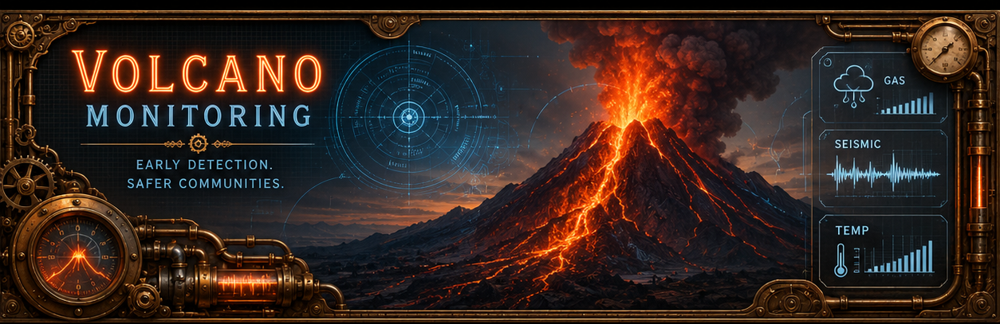

Volcano Monitoring
This page is dedicated to real-time volcano monitoring and volcanic activity tracking. VolcanoDiscovery remains the primary source for the live status list and map below. The dashboard now extracts activity indicators from the feed to surface erupting systems, unrest, ash reports, and possible reactivation language when a report suggests renewed activity after a quieter period.
Frontier Signals Live Volcano Map
Markers are built from the VolcanoDiscovery live status feed. Select a marker or a list card to sync the map and open detailed activity context.
Live Volcano Status
Notable Activity
- Loading current activity...
Reactivation Watch
- Scanning source descriptions...
Regional Concentration
- Loading regional summary...
Erupting0
Unrest0
Reactivation Watch0
Ash Reports0
Non active0
Scroll inside the live list panel to browse additional volcano reports.
Loading live volcano status from VolcanoDiscovery...
Source: VolcanoDiscovery widget feed
VolcanoDiscovery Static Updated Map